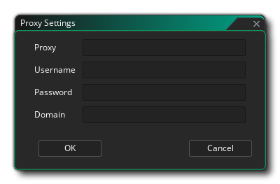

一旦你下载并安装了GameMaker Studio 2，首次使用你会被要求输入你的许可信息：
你的许可信息是和YoYo 账户 (YYA) 绑定的，并且你会被要求必须有一个才能使用GameMaker Studio 2。你的账户承载着你的所拥有的全部YoYo Games产品的许可信息并且也被用于YoYo Games 市场。你可以在下面的页面中找到关于YYA的详细信息。
重要！ 如果你已经在使用一个 GameMaker Studio 2 的试用版许可证，然后买一个其它的许可证（桌面版、移动版、UWP、网页版或者控制台），然后你可能 需要登出IDE，接着重启GameMaker Studio 2，之后再次登录以确保新的许可证正确应用（尽管这应该会自动生效）。你可以从 文件菜单 中登出。

Proxy Support
If you require Proxy Support for your installation of GameMaker Studio 2, this can be added simply by clicking the Proxy. This will bring up the following window: 
You can now add in your proxy details. Some of the fields shown above are optional and if there is one you don't require then simply leave the field blank. Before continuing however it is worth noting that if you have set a proxy in your Windows Internet Options, and it doesn't require a username/password, then it should just "as is" and you probably will not be required to set up the proxy in GameMaker Studio 2.
If your proxy does require a username and/or password, then you'll need to add them in to the fields shown in the window above. Note that in these cases the username/password/proxy details will always be required, and that the proxy IP should also have the port added, ie: xx.xx.xx.xx:port.
Once you have added the relevant information, click on Okay and log in to GameMaker Studio 2 as normal.